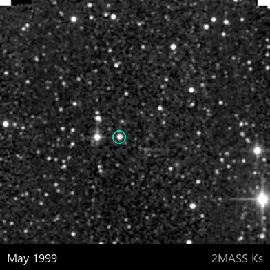

A lo largo de un cuarto de siglo
Luhman 16
La pareja de enanas marrones más cercana, a 6,5 años luz, hallada en 2013 por su movimiento en las imágenes de WISE, de la NASA.

De 2MASS en mayo de 1999 a SPHEREx en julio de 2026, Luhman 16 cruza el campo. Chronosphere mide su movimiento a partir de estas 30 imágenes: 2,80 segundos de arco al año; el catálogo da 2,79. En las visitas de WISE y NEOWISE la página también encuentra Luhman 16 por sí sola, sin que nadie le diga dónde mirar.
Abrir Luhman 16 a lo largo de 27 años
Fuentes: 2MASS · WISE, NEOWISE · SPHEREx, NASA/JPL-Caltech, IRSA · SIMBAD · Wikipedia